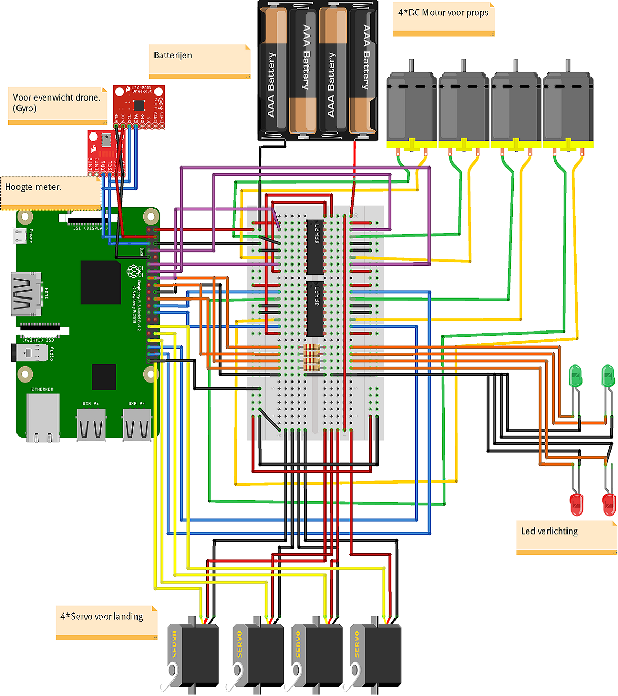
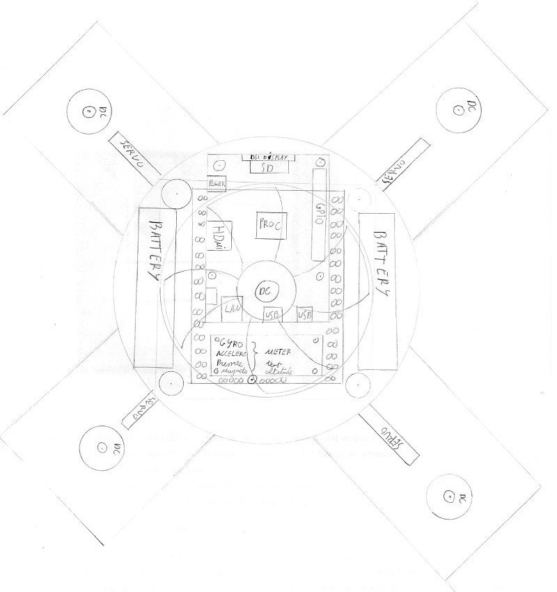

Our project progression.
This is our electric circuit. We used a program named Fritzing to really show the tech side of our drone.
There are a couple of things that we want to built. Thse are sort of upgrades of the drone. Building these things wont be easy. We will need the drone design to be able to upgrade it.
A blueprint of the drone.
Here are our features.
In this project we will creating a quadcopter. As motherboard we will use a Raspberry PI. This motherboard will be able to control the landing gear, the led lights, the flight pilot and much more. We had this idee because we both love flying and because we couldn't wait to create something on our own. We got the assignment to do whatever we wanted and the first thing we thought of was this. It wasn't an easy idee because we knew what we were getting our selfs in to. Our motivation was just unstoppable. Then a couple of days later we thought that building a drone was something. Yes. Upgrading it would give us the opportunity to work on this project for the entire year. So we started to speculate about a couple nice idees. Some exeples of these are: a cactus skeleton frame, it gives us the best cooling for all the components and looks very nice. We also thought about a retractable landing gear so it'll be more aerodynamic.